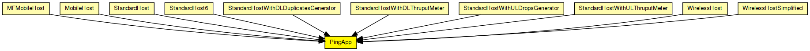

Generates ping requests and calculates the packet loss and round trip parameters of the replies.
Start/stop time, interval etc can be specified via parameters. To disable, specify empty destAddr or stopTime<=startTime.
Every ping request is sent out with a sequence number, and replies are expected to arrive in the same order. Whenever there's a jump in the in the received ping responses' sequence number (e.g. 1, 2, 3, 5), then the missing pings (number 4 in this example) is counted as lost. Then if it still arrives later (that is, a reply with a sequence number smaller than the largest one received so far) it will be counted as out-of-sequence arrival. So the number of really lost pings will be "lost" minus "out-of-order" (assuming there's no duplicate or bogus reply).
Uses PingPayload as payload for the ICMP(v6) Echo Request/Reply packets.
See also: PingPayload, ICMP, ICMPv6Core

The following diagram shows usage relationships between types. Unresolved types are missing from the diagram.
The following diagram shows inheritance relationships for this type. Unresolved types are missing from the diagram.
| Name | Type | Description |
|---|---|---|
| MFMobileHost | compound module |
Models a mobile host with a wireless (802.11b) card in ad-hoc mode. This model contains the Mobility Framework's 802.11 implementation, Nic80211, and IP, TCP and UDP protocols. The mobility model can be dynamically specified with the mobilityType parameter. |
| MobileHost | compound module |
Models a mobile host with a wireless (802.11b) card in ad-hoc mode. This model contains the new IEEE 802.11 implementation, Ieee80211Nic, and IP, TCP and UDP protocols. The mobility model can be dynamically specified with the mobilityType parameter. |
| StandardHost | compound module | |
| StandardHost6 | compound module | |
| StandardHostWithDLDuplicatesGenerator | compound module |
IP host with SCTP, TCP, UDP layers and applications AND PPPInterfaceWithDLDuplicatesGenerator. |
| StandardHostWithDLThruputMeter | compound module |
IP host with SCTP, TCP, UDP layers and applications AND PPPInterfaceWithDLThruputMeter. |
| StandardHostWithULDropsGenerator | compound module |
IP host with SCTP, TCP, UDP layers and applications AND PPPInterfaceWithULDropsGenerator. |
| StandardHostWithULThruputMeter | compound module |
IP host with SCTP, TCP, UDP layers and applications AND PPPInterfaceWithULThruputMeter. |
| WirelessHost | compound module |
Models a host with one wireless (802.11b) card in infrastructure mode. This module is basically a StandardHost with an Ieee80211NicSTA added. It should be used in conjunction with WirelessAP, or any other AP model which contains Ieee80211NicAP. |
| WirelessHostSimplified | compound module |
Models a host with one wireless (802.11b) card in infrastructure mode, but using a simplified NIC that does not support handovers. This module is basically a StandardHost with an Ieee80211NicSTASimplified added. It should be used in conjunction with WirelessAPSimplified, or any other AP model which contains Ieee80211NicAPSimplified. |
| Name | Type | Default value | Description |
|---|---|---|---|
| destAddr | string | "" | |
| srcAddr | string | "" | |
| packetSize | double | 56B |
of ping payload, in bytes |
| interval | double | 1s |
time to wait between pings (can be random) |
| hopLimit | double | 32 |
TTL or hopLimit for IP packets |
| count | double | 0 |
stop after count ping requests, 0 means continuously |
| startTime | double | uniform(0s,this.interval) |
send first ping at startTime |
| stopTime | double | 0s |
send no pings after stopTime, 0 means forever |
| printPing | bool | true |
dump on stdout |
| Name | Value | Description |
|---|---|---|
| display | i=block/app |
| Name | Direction | Size | Description |
|---|---|---|---|
| pingIn | input | ||
| pingOut | output | ||
| pingv6In | input | ||
| pingv6Out | output |
// // Generates ping requests and calculates the packet loss and round trip // parameters of the replies. // // Start/stop time, interval etc can be specified via parameters. To disable, // specify empty destAddr or stopTime<=startTime. // // Every ping request is sent out with a sequence number, and replies are // expected to arrive in the same order. Whenever there's a jump in the // in the received ping responses' sequence number (e.g. 1, 2, 3, 5), then // the missing pings (number 4 in this example) is counted as lost. // Then if it still arrives later (that is, a reply with a sequence number // smaller than the largest one received so far) it will be counted as // out-of-sequence arrival. So the number of really lost pings will be // "lost" minus "out-of-order" (assuming there's no duplicate or bogus reply). // // Uses PingPayload as payload for the ICMP(v6) Echo Request/Reply packets. // // @see PingPayload, ICMP, ICMPv6Core // simple PingApp { parameters: string destAddr = default(""); // destination IP or IPv6 address string srcAddr = default(""); // source IP or IPv6 address (useful with multi-homing) double packetSize @unit("B") = default(56B); // of ping payload, in bytes volatile double interval @unit("s") = default(1s); // time to wait between pings (can be random) double hopLimit = default(32); // TTL or hopLimit for IP packets double count = default(0); // stop after count ping requests, 0 means continuously double startTime @unit("s") = default(uniform(0s,this.interval)); // send first ping at startTime double stopTime @unit("s") = default(0s); // send no pings after stopTime, 0 means forever bool printPing = default(true); // dump on stdout @display("i=block/app"); gates: input pingIn; output pingOut; input pingv6In; output pingv6Out; }